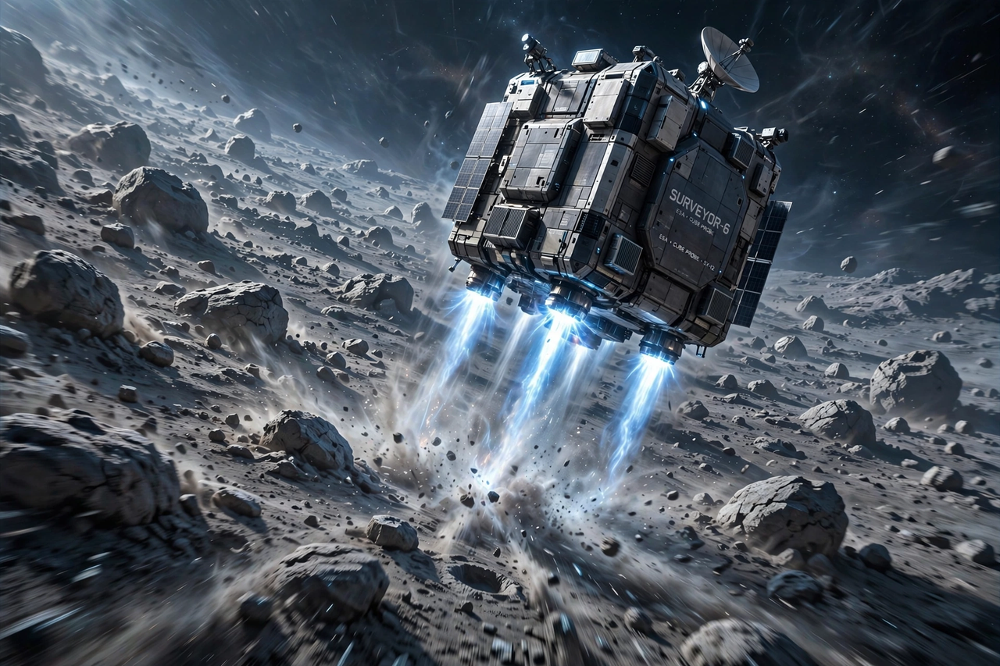

Double Asteroid Redirection Test
From Wikipedia, the free encyclopedia
| Double Asteroid Redirection Test | |
|---|---|
| Operator | NASA / Johns Hopkins APL |
| Launch | 24 November 2021 |
| Impact | 26 September 2022 (Dimorphos) |
| Result | Orbital period shortened by ~33 minutes |

DART's final approach (artist's concept).The Double Asteroid Redirection Test (DART) was a NASA planetary-defence mission that deliberately crashed a spacecraft into an asteroid to change its orbit — the first demonstration that humanity could deflect a threatening object. On 26 September 2022, DART struck Dimorphos, the small moon of the asteroid Didymos, at about 6.6 km/s.
Dimorphos was chosen because it orbits its partner every 11 hours 55 minutes, so telescopes on Earth could precisely time the change. DART's impact shortened that period by about 33 minutes — roughly ten times the minimum for success — aided by the recoil of debris blasted off the surface. Neither asteroid posed any threat to Earth; the pair was a safe test range 11 million km away.
Legacy
The Italian Space Agency's LICIACube photographed the impact plume, and ground telescopes watched Dimorphos sprout a comet-like tail of debris. ESA's Hera mission, launched in 2024, is travelling to the system to survey the crater and the moon's reshaped body — completing the experiment by measuring exactly how much momentum DART transferred, the number a real deflection would need.
See also
Near-Earth object · Planetary defense · Hayabusa2 · OSIRIS-REx